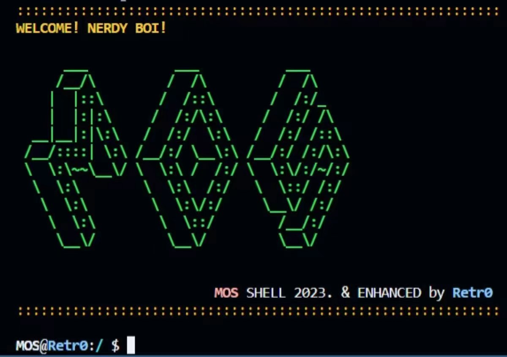
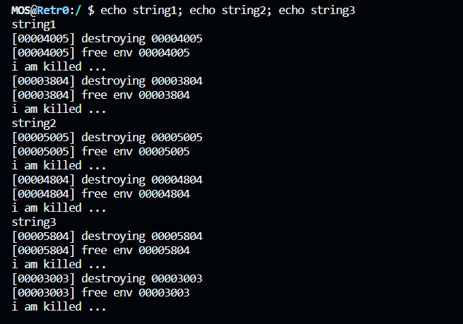
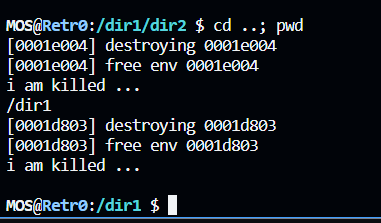
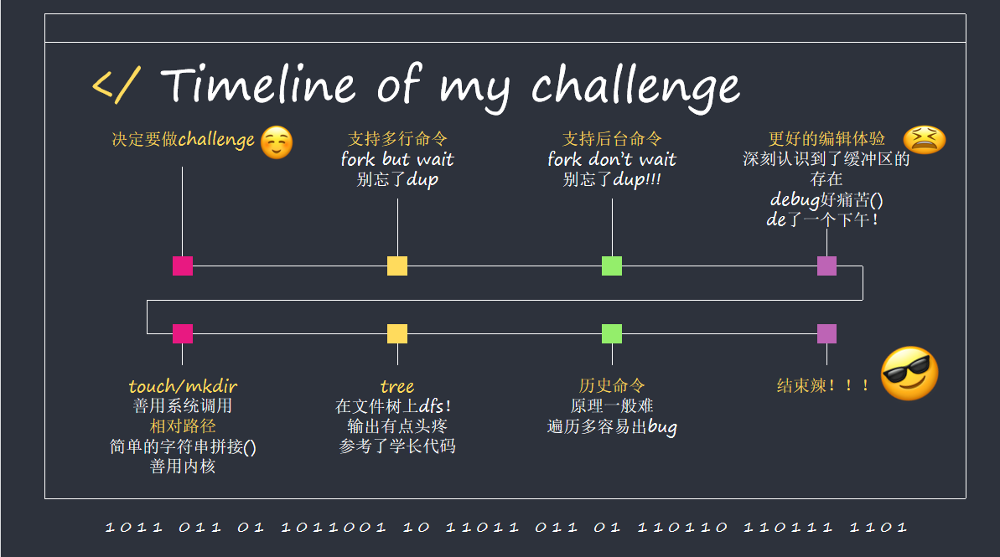

BUAAOS-Lab6 Challenge
看看我的Shell！

实现记录
由于我选择的是Lab6的挑战性任务，整体的子任务数较多，本人能力所限无法用一条完整的思路串联起所有的子任务，故为该节起名为：记录，还请看官海涵。这一部分基本按照osome平台上的任务顺序组织（虽然与实际实现历程有一定差异，我为了更方便对这些拓展功能进行测试，实际上先完成了对命令编辑功能的优化）。
实现由;分隔的一行多命令
由于分号已经在sh.c中以宏定义的形式被加入到保留符号了，故只需要修改parsecmd()函数使其增添对于';'这一符号的处理能力即可。
本功能的具体思路就是当解析遇到一个’;’符号后，fork一个子shell，让子shell继续执行左边的命令，父shell等待子shell执行完成后，执行’;’符号右边的命令，具体的代码如下：
1 | case ';':; |
实现&后缀的shell后台任务
其实本功能和上一项的实现较为类似，只是增加了一点要求：我们的shell只需要等待’&’右侧的命令的执行完毕，而左侧的命令处于“后台运行”状态，shell进程无需等待。与对’;’的处理相似，我们对parsecmd()做如下修改：
1 | int parsecmd(char **argv, int *rightpipe, int *_wait){ // 为函数头添加 int *_wait参数，用于指示当前执行的程序是否需要cmd进行等待 |
注意到与’;’的实现不同点在于父子进程没有通过调用wait()函数进行互相的等待，这是因为后台指令理论上是与前台指令并发的，同时，我们新增了_wait这个int型的指针，它的用法是在runcmd()中告知程序是否需要对当前执行程序进行等待，我们对runcmd()函数的具体修改如下：
1 | int _wait = 1; // 默认是需要等待的 |
当然，这只是在cmd层面实现了该指令，但是我们的mos内核存在一些小问题影响了该功能的运行效果，该问题的解决我们放在最后一部分问题&解决方案来讲。
实现引号包裹的字符串的支持
对引号的支持可以在词法解析时实现，其本质就是在词法解析时将两个引号间的字符串看作一个词法单元，具体实现我们可以在_gettoken()函数中增加如下部分：
1 | if(*s == '\"') { // 识别引号 |
在修改_gettoken()函数时遇到了一点小bug，我第一次写的时候没有将字符串末尾引号置为’\0’，导致实际运行过程中会将前引号之后的所有内容都视为一个字符串，修改后就没问题了。
并在parsecmd()函数中增加针对于字符串此法单元的判断：
1 | case 's': |
实现键入命令时任意位置的修改 & 实现历史命令功能
这真的是我做的最痛苦的一块了，真的是在bug里面找代码。由于均牵涉到方向键的处理，所以我把这两个任务放在一起了。
首先，查阅资料可知，上下左右键在linux中的编码为：
| 键 | 编码 |
|---|---|
| 上 | 27 ‘[‘ ‘A’ |
| 下 | 27 ‘[‘ ‘B’ |
| 左 | 27 ‘[‘ ‘D’ |
| 右 | 27 ‘[‘ ‘C’ |
也就是说，当我们在linux系统下，在键盘下按下一个方向键，就拿’↑’举例子吧，就会往缓冲区顺序写入三个字符，分别是ascii[27]，’[‘以及’A’。
基于上述理解，我们对shell的命令编辑体验进行优化。
对readline函数的逻辑进行重构
首先，我们将从stdin读入进来的字符分为五类：
- 上下方向键(具体编码见上)
- 左右方向键(具体编码见上)
- 退格键(‘\b’)
- 回车键(‘\n’ || ‘\r’)
- 可见ascii码(其它情况)
对于我们的buf数组，我们需要一个标定其下一次插入位置的整形变量i。
1 | void readline(char *buf, u_int n) { |
支持光标左右移动进行相应位置的插入与删除
首先是buf层面的操作：
1 | if(tmp == 'D') { // 左 |
但是回显逻辑就相对来说比较麻烦，我们应当针对左、右、删、插操作设置相应的回显。
其实左键和右键并不需要处理，光标单纯的左右移动并不需要我们来操心，我们只需要关心进行删除和插入的时候如何进行回显。
最终我采取了这样每次插入和删除操作后都进行刷新的做法，虽然效率比较低而且频闪比较高，总结下来主要有以下几步：
- 移动光标到被编辑指令的末尾
- 输出足够的“\b \b”删除旧命令
- 输出新命令
- 维护光标到编辑位置
具体代码实现：
1 | if(modify) { // 如果发生了删改 |
鬼知道这个回显我调了多少次。
支持上下键对历史记录的查询
对于打好readline()框架和已经实现文件创建接口的我们来说并不是一件困难的事情。
为了对我们在根目录下保存历史记录的.history文件进行初始化以及读写操作，我们在用户库的history.c文件里编写了如下函数：
1 | void init_history(); |
并在根目录下编写了history.c文件以烧录进MOS中以实现列出所有历史命令的history命令。
最后的要做的就是在我们的readline()函数里面写好调用逻辑就好：
1 | if(tmp == 'A') { // 上 |
实现名称中.b的省略
简单对我们的命令进行语法分析可知，一条命令的结构是[命令名][空格][参数*]，而在我们的shell中的对外部命令的处理逻辑(当然，也只有外部命令需要做.b的省略)是把parse出的第一个token作为可执行文件名传入spawn函数，来让这个可执行文件接收参数运行起来，所以我们可以在spawn函数里对传入的文件名参数做手脚。
该功能实现相对简单，只需要修改spawn函数中的应用程序文件打开逻辑即可，基本逻辑的伪代码如下：
1 | // 给定文件路径为 char *path |
具体在spawn.c中添加c代码如下：
1 | if ((fd = open(prog, O_RDONLY)) < 0) { |
实现mkdir、touch以及tree
创建类指令
说白了就是实现文件和目录的创建。
在文件系统中增加如下creat函数，为实现touch和mkdir做好基础性工作：
1 | void serve_create(u_int envid, struct Fsreq_create *rq); // /fs/serv.c |
对于这两个命令，我选择以外部命令的形式进行实现，也就是烧录touch.b和mkdir.b两个可执行文件到mos的根目录下，我们对/user/include.mk添加如下内容：
1 | USERAPPS := |
而烧录前的两个.c文件则基于增量开发的create函数编写：
1 | // touch.c |
将这两个文件烧录进我们的mos系统即可实现mkdir和touch命令。
tree的实现
tree这个指令，形象点说，就是个dfs版本的ls。我在实现的时候编写了一个void printTree(int depth, char *path);函数，具体逻辑就是给定一个目录文件的路径，以及当前对文件树的遍历深度，该函数打开该目录文件，对于类型为FTYPE_REG即普通文件，直接输出其名称信息，对于目录文件，输出名称信息后将当前path这个路径拼接上该目录名进行下一层dfs。
实现逻辑相对来说还是比较好盘清楚的，就是输出的时候需要考虑一下：每一行前面的Tab数要和递归深度保持一致，以及，别忘了输出文件名前的”|—“(四字符宽度，保证和一个Tab对齐)。
重定向时对路径不存在文件的默认创建
在parsecmd()函数中对于’>’和’<’两个重定向分支的**文件打开逻辑**进行修改，以’>’为例：
1 | if((r = open(t, O_RDONLY)) < 0){ // 尝试打开 |
[选做]：实现相对路径
在linux中，我们可以使用一种较为简单的方法区别绝对路径与相对路径：
- 以’/‘开头的路径为绝对路径
- 不以’/‘开头的路径为相对路径
而相对路径的实现则是依赖于“当前工作目录”的实现的，这就需要我们思考这些问题：
- 当前工作路径存储在哪里？
- 我们如何读取当前工作路径？
- 我们如何更改当前工作路径？
我的想法是将当前工作路径放在内核态，通过系统调用进行设置与读取。
对处理当前工作路径的系统调用syscall_pwd_op(char *path, int op)定义如下操作：
- 设置(op == 0)：将当前工作路径设置为新传入的路径
- 读取(op == 1)： 返回内核中保存的当前工作路径。
1 | // 对系统调用进行简单的测试 |
实现这一系统调用后，理论上我们就可以支持相对路径了，但是为了用户使用方便，我在/user/lib/pwb_funcs.c里面封装了如下函数：
1 | int move_to(char *path); // 用于进行路径移动的函数，支持传入相对路径，绝对路径以及..(回到上级目录) |
接下来就是shell的内部指令cd和pwd了，由于是内部命令，无需我们以外部可执行文件烧录的形式进行编写，只需要在runcmd()函数中略施小计即可：
1 | if(strcmp("cd", argv[0]) == 0) { |
在我们目前的MOS中，需要传入文件路径参数的命令文件有：cat.c，ls.c，mkdir.c，touch.c以及tree.c，我们需要使用上述增量内容对这些文件进行修改，以使它们可以支持相对路径。
我们对file.c中，需要传入路径参数的三个函数open()，remove()，create()进行修改。
只需要添加如下路径调整函数再在上述三个操作函数开头调用该函数即可。
1 | void adjust_path(char *dst, char *src){ |
修改完之后支持cat.c，ls.c以及touch.c了，接下来我们处理ls.c和tree.c。
ls命令比较好对付，lab6初始代码的ls在没有传入命令参数时，都是默认列出根目录的信息的，代码如下：
1 | // in ls.c -> main func |
而在实现相对路径后，应当列出当前工作路径的所有文件，故修改如下：
1 | if (argc == 0) { // 默认情况 |
这样就可以让我们使用ls来列出当前工作目录的所有文件/目录了
tree同样，原本我们编写的tree.c文件默认是从/也就是根目录开始搜，更改成从当前工作路径开始搜就好。
至此，我们的挑战性任务的实现就算告一段落了。在完成上述任务的基础上，我还对我的shell做了一定的美化，不过这就是题外话了，在本报告中不过多赘述。
功能测试
一行多命令：
运行如下命令：
1 | echo string1; echo string2; echo string3 |
得到输出：

实现后台任务
编写如下测试代码并烧录进MOS：
1 | // test_and.c |
首先执行命令：test_and & ls
运行结果：

接着，先输入test_and &再输入ls，测试运行过程中，是否可以继续输入，以下是运行效果：

实现引号支持
键入命令echo "mkdir abc; touch abc/hahah"，运行结果如下：

.b省略
其实上一张图已经可以看出对.b省略进行实现了。
tree、mkdir以及touch
运行命令：
1 | mkdir dir1; mkdir dir2; touch dir1/file1; touch dir1/file2; mkdir dir2/dir3; tree |
得到运行结果：

对于重定向自动创建文件进行测试，执行命令echo "adsbadabsjhdvajbdjasbdhjasbdh" > a_random_file后进行ls; cat a_random_file，得到运行结果：

相对路径的实现
运行如下命令：
1 | mkdir dir1; cd dir1; mkdir dir2; cd dir2; mkdir dir3; touch file1; touch file2; touch file3; tree /dir1; pwd; ls |
以下是运行结果：

在此基础上运行cd ..; pwd，有如下结果：

至此，测试部分结束。
问题&解决方案
在实现&后台命令时遇到的卡顿问题
实现完之后发现在后台命令运行过程中，若后台命令任务量较大，会出现明显的间断执行的现象，经过分析得知是mos中从控制台读取字符的系统调用sys_cgetc()的问题。
1 | // XXX: kernel does busy waiting here, blocking all envs |
上述系统调用函数存在忙等现象，我们要解决上述问题，就需要破除这种忙等现象，以下是修改(删除了造成忙等的死循环)：
1 | int sys_cgetc(void) { |
之所以这么做，是因为用户态下，console.c中的cons_read()函数已经有了如下实现：
1 | while ((c = syscall_cgetc()) == 0) { |
实现历史命令查询功能时遇到的保存bug
在实现save_history()函数的时候出了一点小问题，我没有考虑到每次open我们的.history文件时都会对文件描述符中的fd_offset字段进行重置（为0），就导致了我的实现只能保存上一次执行的命令，最终我在user/lib/history.c加入了全局变量last_off，让它记录上一次调用save_history()后的fd_offset的值，并在在下一次写入完成后维护它。
在上传这篇博客的时候头好痛，蹦不出几句好词儿，那就俗点：
谨以此文献给我这2023春季学期为ooos流汗流泪的青春吧。
